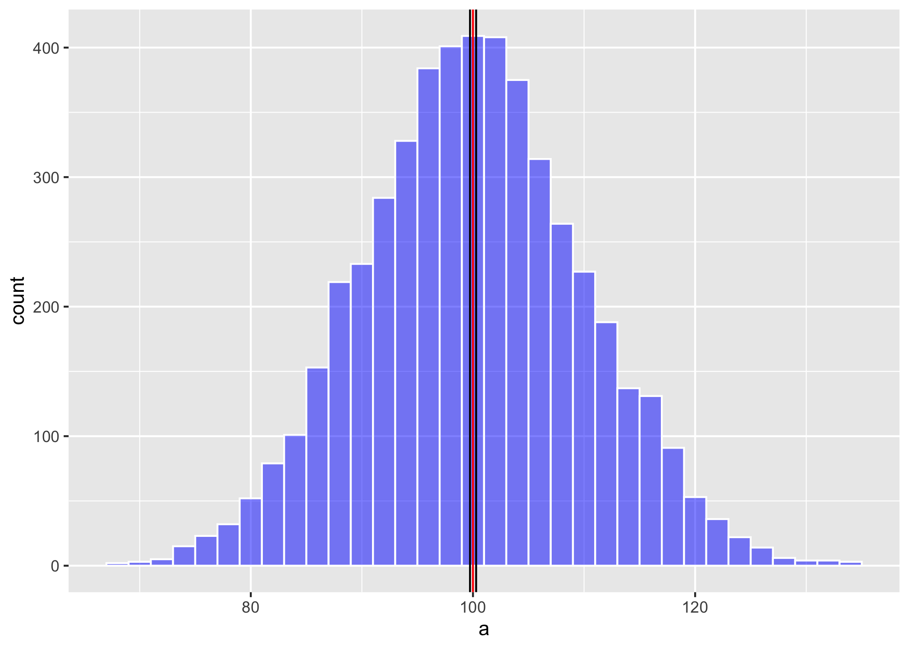

R Markdown Example
Raymond L. Tremblay
9/8/2020


Este documento es para enseñar a usar los códigos de RMarkdown
Titulo
jydfgljgluygljguglugkvkhvkbv.
kjvkjhjkv;khjkk;kj;k
Subtitulo
La especie estudiada es Lepanthes eltoroensis que se encuentra en El Yunque.
En este curso se estará enfatizando los análisis cuantitativo, esto es simplemente que analizamos los datos para llegar a una conclusión o interpretación sobre un tema. Naturalmente el proceso de seleccionar los datos puede ser un reto grande. Como uno selecciona los datos y el desarrollo de la investigación depende del diseño experimental. El diseño es el procedimiento de como uno recolecta los datos y como los vamos a analizar. En este curso no estaremos evaluando métodos cualitativos de análisis. Este método cuantitativo se refiere a evaluar principalmente opiniones, motivaciones o razones que influencia o impacta una situación, \[A = \pi*r^{2}\]. En los métodos cuantitativos es necesario que los resultados sean de una forma o otra numéricos o categóricos.

fyhgjk
y = x2
un texto importante que se refiere a una referencia1.
referencia (Tremblay et al. 2010)
- unordered list
- item 1
- item 2
- sub-item 1
- sub-item 2
- item 1
- item 2
- sub-item 1
- sub-item 2
- item 3
Hacer tablas
| Columna 1 | Columna 2 |
|---|---|
| info 1 | 07880 |
| info 3 | 8676887 |
\(A = \pi*r^{2}\)
fghjkl
Sitio de buscar más informacion de RStudio
– especia 1
– especie 2
— especie 3
Es este texto es inecesario